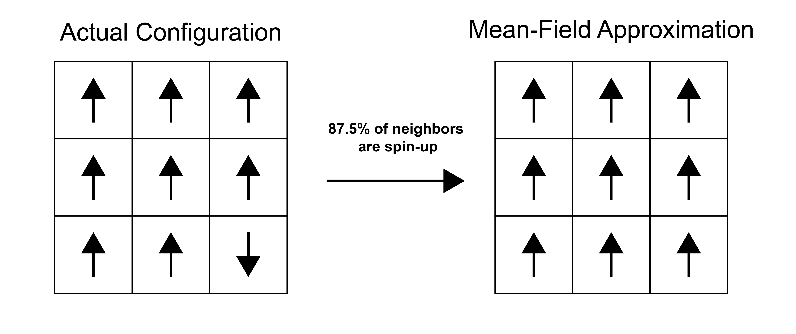

Mean-field theory#
Additional Readings for the Enthusiast#
Chandler [1] 5.4
Goals for today’s lecture#
Formulate mean-field theory
Apply mean-field theory to obtain the self-consistent mean-field theory for the Ising model
Understand the limitations and approximations implicit in mean-field theory
Mean-field theory#
Obtaining a simple expression for the Helmholtz free energy that can be differentiated to obtain the magnetization analytically from the Ising model partition function is only possible in a one-dimensional system (Problem Set 3). It is possible in a two-dimensional system with significant difficulty (first solved by a Nobel laureate), and impossible in higher dimensions. Thus, we will instead simplify the partition function and introduce an approximation that is commonly used in the study of phase behavior - the mean-field approximation, or the approximation used in mean-field theory.
- mean-field theory#
an approximation to simplify our formulation of particle interactions; assumes that the media surrounding a particle exerts an average field on the particle
The idea of mean-field theory is to examine a particular particle (for the Ising model, a single spin) and assume that the surrounding medium (in this case the other spins) exerts an average field which interacts with the tagged spin of interest. That is, instead of examining interactions with the specific configuration of neighbors local to that spin, the interactions are assumed to be equivalent to that of the average configuration of the medium. The approach thus neglects fluctuations of the medium that are long-ranged and reduces the many-body problem to an essentially one-body problem focused on the particle of interest. We will illustrate the essence of mean-field theory by using it to analytically solve the Ising model.

Consider again the energy of a single configuration of the Ising model:
This expression is for the energy of the entire lattice. If, instead, we consider the energy of a single spin \(i\), we could write:
Why did we lose the factor of \(\frac{1}{2}\)?
The form of this energy suggests that we can think of the term \(\frac{J}{\mu} \sum_j^\prime s_j\) as a perturbation to the actual magnetic field, \(H\), acting on the spin; we therefore define \(H^\textrm{eff}_i\) as the effective magnetic field that does work on spin \(i\) including this perturbation:
The single-spin energy is then written as:
We can now see that the interaction energy with neighboring spins contributes to the effective field that acts on spin \(i\). We can rewrite the expression for the effective field in terms of the average spin of the nearest-neighbors to remove the sum:
Here, we define \(n\) as the number of nearest-neighbors (i.e. 2 in 1D, 4 in a 2D square lattice, etc.) and \(\langle s \rangle ^\prime_i\) is the average value of the spin of the nearest-neighbors of \(s_i\), hence the \(^\prime\). So far, these expressions are all exact.
We now make the mean field assumption, and assume that \(\langle s \rangle ^\prime_i = \langle s \rangle\) - that is, the average value of the local spins (nearest-neighbors) of spin \(i\) is equal to the average value of spins in the entire system. The effective field then becomes:
These expressions are the essence of mean-field theory - the specific accounting of interactions with nearest-neighbor spins has been replaced with an average (mean) interaction, \(H^\textrm{eff}\), so that spins are no longer explicitly coupled. The mean field is identical for each spin and does not depend on \(s_i\).
Correlations between spins are completely captured in the ensemble-average spin term, which is a property of the state of the lattice and not a property of a specific spin. We can then use this expression for the energy of a single spin to solve for the magnetization. Indeed, we have already done just that on Problem Sets 1 and 2, where we solved for the magnetization of a paramagnet in a field \(H\). We can use the exact same formalism but replace \(H\) with the effective field \(H^\textrm{eff}\):
We have simply replaced the field \(H\) with the effective field \(H^\textrm{eff}\) in these steps. The rest of the derivation proceeds the same as in the problem sets, allowing us to skip to:
This is the mean-field approximation for the total magnetization of the lattice, \(M\), and allows us to determine the magnetization for a set of interacting spins without knowing exact configurations of spins on the lattice. We can simplify this expression by replacing the ensemble-average magnetization with the ensemble-average spin via \(\langle s \rangle =\langle M \rangle / N\mu\) to finally get:
This equation has \(\langle s \rangle\) on both the left hand side and in the \(\tanh\) function. We refer to this type of expression as a
- self-consistent mean-field theory#
a mean-field theory where the a thermodynamically-averaged variable depends on itself.
… because the mean field which influences the average value of the magnetization then itself depends on the average value of the magnetization. This expression now has the magnetization (i.e., average spin) as a function of the temperature, external field, lattice (through \(n\)), and coupling parameter, so we can solve as a function of temperature to determine the temperature at which the system transitions from a non-zero to zero magnetization.
For this type of expression, we can solve for the solution graphically by finding the intersection between \(\langle s \rangle\) and \(\tanh( \beta \mu H + \beta J n \langle s \rangle )\) if both are plotted as a function of \(\langle s \rangle\). In other techniques, such as the self-consistent field theory of polymers, similar equations are solved iteratively by converging onto a result.

Performing this graphical solution method shows the following behavior in the zero-field (\(H=0\)) limit. For small values of \(\beta J n\), the only solution is the trivial solution \(\langle s \rangle = \tanh( \beta J n \langle s \rangle ) = 0\). Since \(\beta J n\) is temperature dependent through the \(\beta\) parameter, we recognize that this solution, in which there is no spontaneous magnetization, is the disordered state. Since \(\beta = 1/k_B T\) this corresponds to a high-temperature state, consistent with our understanding of the entropically favored disordered state being preferred at high temperatures. For large values of \(\beta J n\), there are three solutions for \(\langle s \rangle\); the trivial solution, and two symmetric solutions for finite values of \(\langle s \rangle\). The two possible finite values correspond to the ordered, low-temperature alignment of spins characteristic of a ferromagnetic, with two solutions possible due to the symmetry of the system. Calculating the free energies of these solutions would show that the finite solutions are lower free energy than the trivial solution, confirming that at low temperatures the system aligns spins. Finally, the crossover between the low-temperature and high-temperature state occurs at a temperature:
Thus, the mean field theory predicts an order-disorder transition. However, it should be noted that this solution is not identical to the exact solutions - for example, on a 2D square lattice, the analytical solution predicts \(T_C \approx 2.3J/k_B\) which is distinct from the value of \(T_C\) in the mean field model. This error decreases as we go to higher dimensions, but reflects the approximations within mean-field theory. More advanced techniques are possible, including “tagging” multiple spins for simultaneous analysis, but that is beyond the scope of this class.